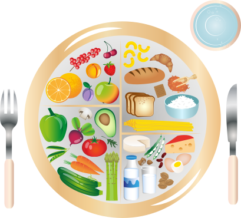

1. Meal Planning
Guidance on choosing ingredients and putting together balanced meals for everyday eating.
At My Balanced Plate, we believe that understanding a balanced meal is only part of the journey. Our long-term goal is to help customers become more confident in preparing practical, balanced meals at home.
As My Balanced Plate develops, we plan to introduce meal-preparation guidance designed to help customers understand how to plan, prepare and portion meals in a practical way.
Guidance on choosing ingredients and putting together balanced meals for everyday eating.

Helping customers understand how different food components can be combined and portioned as part of a balanced meal.
Using our existing meal-analysis approach, including Journable as a supporting tool, to help customers understand the estimated nutritional information associated with meals.
Learn how to store prepared meals safely and keep ingredients organised for future meals. Proper storage can help maintain food quality and make meal preparation more convenient.
Select a topic below to discover practical meal preparation tips.
Plan your meals ahead of time and create a shopping list to help you stay organised and avoid unnecessary purchases.
Add your meal preparation tasks and set reminders to help you stay organised.
No tasks scheduled yet. Add your first task above.
We are developing our meal-preparation services and would love to hear what kind of support would be useful to you.
Contact UsContact Number: 087 987 6010
Email Address: meals@mybalancedplate.co.za